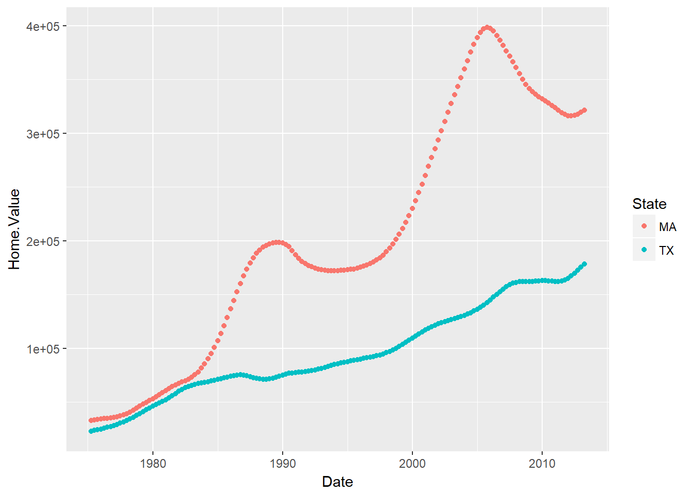
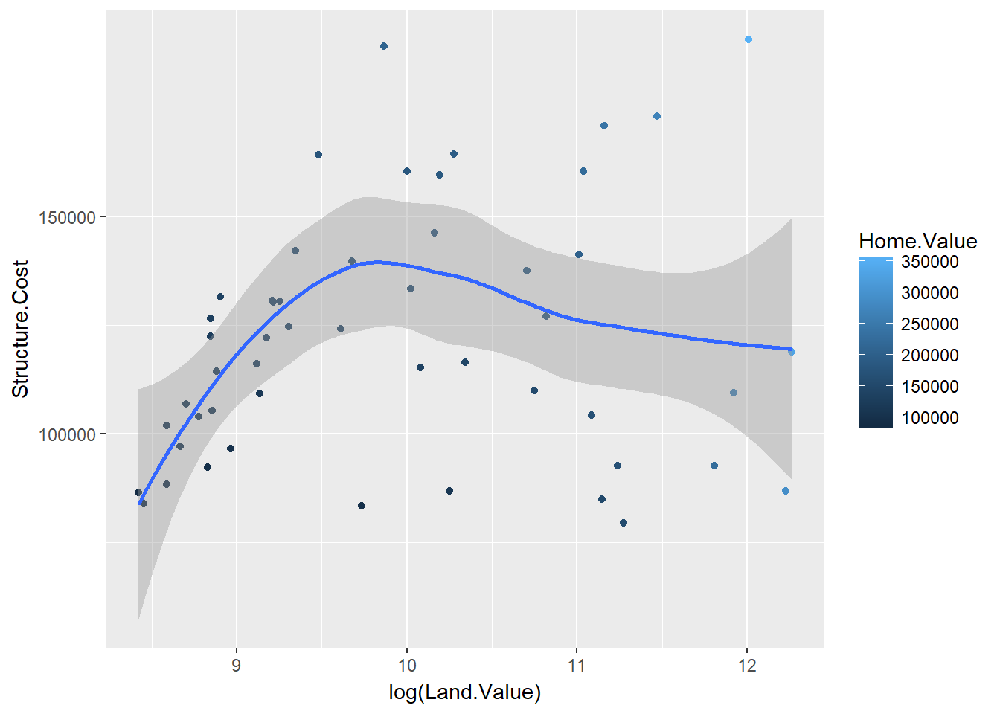

Unidade 9 Gráficos com o ggplot2
9.1 Introdução
O pacote ggplot2 (Wickham and Chang 2016) permite mesmo aos usuários sem muito conhecimento de R a produzirem gráficos com aparência profissional. Mais do que isso, possibilita que os analístas de dados possam explorar e comunicar melhor as evidências existentes em um conjunto de dados, tornando seu trabalho como um todo mais robusto.
9.2 Gramática dos gráficos (Wilkinson 2005)
O pacote ggplot2 incorpora um conceito moderno sobre como constriur apresentações gráficas. Esse conceito está baseado na ideia de que um gráfico deve ser construído em camadas sucessivas, e tais camadas aos poucos vão dando forma a ideia a ser comunicada.
As camadas de um gráfico são (termo em inglês entre parênteses):
- dados (data)
- mapeamento visual (aesthetic mapping)
- geometria (geometric object)
- transformações (statistical transformations)
- escalas (scales)
- sistema de coordenadas (coordinate system)
- posição (position adjustments)
- faces (faceting)Essa organização permite que elementos gráficos sejam combinados de maneira flexível, sejam refinados aos poucos partindo de ideias mais abstratas. Além do que a alteração de uma camada não compromete a consitências das demais. Por exemplo, mudar o símbolo ou a cor dos pontos.
Existem outros pacotes gráficos em R, alguns independentes mas outros que estendem ainda mais a abrangência do pacote ggplot2, como por exemplo:
- Gráficos 3-D (pacote rgl)
- Plotagem de grafos (pacote *igraph*)
- Gráficos interativos (pacote *ggvis*)Para essa sessão, a referência utilizada é o material do workshop “Introduction to R” realizado em Fevereiro/2017 pelo Research consulting for the Harvard community - Data Science Services - Harvard University, confeccionado principalmente por Ista Zahn.
9.3 Primeiro exemplo
9.3.1 Dados: “Housing prices”
Fonte dos Dados [https://www.lincolninst.edu/subcenters/land-values/land-prices-by-state.asp]
# Importe os dados (arquivo landdata-states-2016q1.xls).
housing <- read.csv("Dados/ggplot2/landdata-states.csv")
head(housing[1:5])## State region Date Home.Value Structure.Cost
## 1 AK West 2010.25 224952 160599
## 2 AK West 2010.50 225511 160252
## 3 AK West 2009.75 225820 163791
## 4 AK West 2010.00 224994 161787
## 5 AK West 2008.00 234590 155400
## 6 AK West 2008.25 233714 1574589.3.2 ggplot2 VS Base
Comparado com o pacote base, ggplot2 :
- comandos com mais texto para gráficos simples
- porém mais comandos mais simples para gráficos complexos
- dados sempre devem estar em um `data.frame`
- usa uma sistemática diferente para adicionar os elementos gráficos
Como já vimos, para montar um histograma com o pacote base:
hist(housing$Home.Value)
Já usando ggplot2:
library(ggplot2) #não esqueça de carregar e instalar o pacote
ggplot(housing, aes(x = Home.Value)) +
geom_histogram()## `stat_bin()` using `bins = 30`. Pick better value with `binwidth`.Obs: ‘+’ significa que o próximo comando será somado na definição do gráfico
Base wins!
9.3.3 ggplot2 VS base agora com gráficos mais complexos:
O gráfico apresenta a evolução dos preços das casas em dois estados americanos, onde os pontos de cada estado possui uma cor distinta.
plot(Home.Value ~ Date,
data=subset(housing, State == "MA"))
points(Home.Value ~ Date, col="red",
data=subset(housing, State == "TX"))
legend(1975, 400000,
c("MA", "TX"), title="State",
col=c("black", "red"),
pch=c(1, 1))Já com ggplot2:
ggplot(subset(housing, State %in% c("MA", "TX")),
aes(x=Date,
y=Home.Value,
color=State))+
geom_point()
ggplot2 wins!
9.4 Estrutura para montagem de um gráfico
ggplot(data = <default data set>,
aes(x = <default x axis variable>,
y = <default y axis variable>,
... <other default aesthetic mappings>),
... <other plot defaults>) +
geom_<geom type>(aes(size = <size variable for this geom>,
... <other aesthetic mappings>),
data = <data for this point geom>,
stat = <statistic string or function>,
position = <position string or function>,
color = <"fixed color specification">,
<other arguments, possibly passed to the _stat_ function) +
scale_<aesthetic>_<type>(name = <"scale label">,
breaks = <where to put tick marks>,
labels = <labels for tick marks>,
... <other options for the scale>) +
theme(plot.background = element_rect(fill = "gray"),
... <other theme elements>)9.5 Mapeamento Visual e geometrias (Aesthetic Mapping and geometrics)
9.5.1 Aesthetic Mapping
Em ggplot2 aesthetic significa “algo que pode ser visto”. Exemplo:
- position (i.e., eixos x e y)
- color (cor externa)
- fill (cor interna usada para preencher)
- shape (tipo de símbolo no caso de pontos)
- linetype (tipo de linha)
- size (tamanho)Cada tipo de objeto geométrico geom aceita somente um subconjunto das aesthetic, que são inseridas via função aes().
9.5.2 Objetos geométricos (geom)
Os objetos geométricos são os símbolos usados em um grafo. Exemplo:
- pontos (`geom_point', para scatter plots, dot plots, etc)
- linhas (`geom_line', para séries temporais, linhas de tendência, etc)
- boxplot (`geom_boxplot', para boxplots!)
- Um gráfico deve ter pelo menos um geomm; Nào há limite
- podem ser adicionados como uma camada usando o sinal de `+`Uma lista das geom_ disponíveis pode ser visualizada usando o comando help.search("geom_", package = "ggplot2") ou simplesmente teclando geom_<tab> em uma boa IDE R (como o Rstudio)
9.6 Pontos (Scatterplot)
`geom_point’ requer que pelo menos o mapeamento de x e y tenham sido feitos. Os outros são opcionais.
hp2001Q1 <- subset(housing, Date == 2001.25)
ggplot(hp2001Q1,
aes(y = Structure.Cost, x = Land.Value)) +
geom_point()
Usando a log() para transformar a variável no eixo x.
ggplot(hp2001Q1,
aes(y = Structure.Cost, x = log(Land.Value))) +
geom_point()
9.7 Linhas (Ex. Regressão linear)
Como já foi dito, um gráfico usando ggplot2 pode conter mais de uma geom. Nesse caso, funciona como novas camadas fossem acrescentadas ao gráfico.
Nesse exemplo, vamos incorporar ao gráfico uma linha de predição baseada na regressão linear (veremos adiamte mais detalhadamente esse assunto):
hp2001Q1$pred.SC <- predict(lm(Structure.Cost ~ log(Land.Value), data = hp2001Q1))
p1 <- ggplot(hp2001Q1, aes(x = log(Land.Value), y = Structure.Cost))
p1 + geom_point(aes(color = Home.Value)) +
geom_line(aes(y = pred.SC)) Obs: No chunk anterior a variável p1 contém a primeira camada do gráfico, e vamos reutilizá-la em outros exemplos abaixo. Aqui usamos duas geom, sendo que a cor dos pontos foi associada também a uma variável do data.frame. Automaticamente uma legenda foi criada e posicionada.
9.8 Smoothers
Esse geom_ inclui uma linha de predição e uma faixa de intervalo de confiança considerando os pontos informados em aes(). Desta vez vamos reaproveitar nossa variável p1.
p1 +
geom_point(aes(color = Home.Value)) +
geom_smooth()## `geom_smooth()` using method = 'loess'
9.9 Texto (Label Points)
p1 +
geom_text(aes(label=State), size = 3)obs: Para mais possibilidades com textos existe o pacote ggrepel (???).
## install.packages("ggrepel")
library("ggrepel")
p1 +
geom_point() +
geom_text_repel(aes(label=State), size = 3)9.10 Aesthetic Mapping VS Assignment
É importante frisar que as variáveis são mapeadas visualmente dentro da função aes(), enquanto que mapementos visual fixo (fixed aesthetics) como o tamanho de pontos deve ser realizado fora de aes().
Por exemplo:
p1 +
geom_point(aes(size = 2), # Errado! 2 não é uma variável
color="red") # ok -- todos os pontos devem ser *red*
Mais de uma variável mapeada em aes():
p1 +
geom_point(aes(color=Home.Value, shape = region))## Warning: Removed 1 rows containing missing values (geom_point).9.11 Exercicio I
Os dados para este exercício estão em no arquivo ‘EconomistData.csv’.
A fonte original dos dados é:
- http://www.transparency.org/content/download/64476/1031428
- http://hdrstats.undp.org/en/indicators/display_cf_xls_indicator.cfm?indicator_id=103106&lang=en
Esses dados revelam o Índice de Desenvolvimento Humano(HDI) e o Índice Corrupção Perceptível(CPI) de diversos países.dat <- read.csv("Dados/ggplot2/EconomistData.csv")
head(dat)Se tudo estive correto, o comando abaixo deve funcionar:
1. Crie um gráfico de pontos (scatter plot) com CPI no eixo x e HDI no eixo y.
2. Colorir os pontos em azul (blue).
3. Use a região para mapear a cor dos pontos.
4. Aumente o tamanho dos pontos (size = 2)
5. Associe o tamanho dos pontos ao HDI.Rank9.12 Recursos adicionais
ggplot2:
- Mailing list: [http://groups.google.com/group/ggplot2](http://groups.google.com/group/ggplot2)
- Wiki: [https://github.com/hadley/ggplot2/wiki](https://github.com/hadley/ggplot2/wiki)
- Website: [http://had.co.nz/ggplot2/](http://had.co.nz/ggplot2/)
- StackOverflow: [http://stackoverflow.com/questions/tagged/ggplot](http://stackoverflow.com/questions/tagged/ggplot)References
Wickham, Hadley, and Winston Chang. 2016. Ggplot2: Create Elegant Data Visualisations Using the Grammar of Graphics. https://CRAN.R-project.org/package=ggplot2.
Wilkinson, Leland. 2005. The Grammar of Graphics. 2nd ed. Springer-Verlag New York.